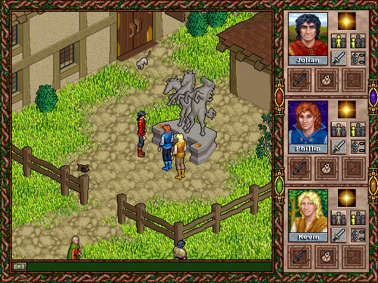
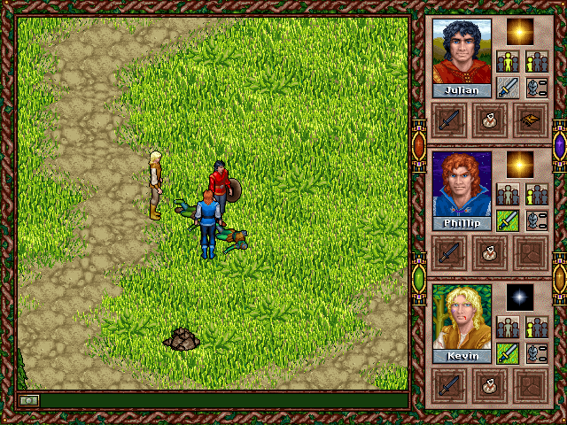

名稱：仙境故事2／仙境傳奇2／童話冒險2：亡者之廳／亡靈大廳 (Faery Tale Adventure II: Halls of the Dead，英文版)
簡介：Dreamers Guild 1997年出品的角色扮演遊戲，以3D斜角畫面呈現，團隊即時方式戰鬥
[待補]。


備註：本版為DOS/Windows雙合一版，DOS版請執行PLAY.BAT，Windows版請執行FTA2Win.EXE。
保護：無，需最大安裝，並將光碟VIDEO目錄內容拷貝到安裝目錄，再修改FTA2.INI裡的目錄
為"."。Windows版若在Windows目錄裡有殘留FTA2.INI檔，要先刪除。
備註：XP以上系統安裝時，要設定SETUP.EXE為Win9x相容。